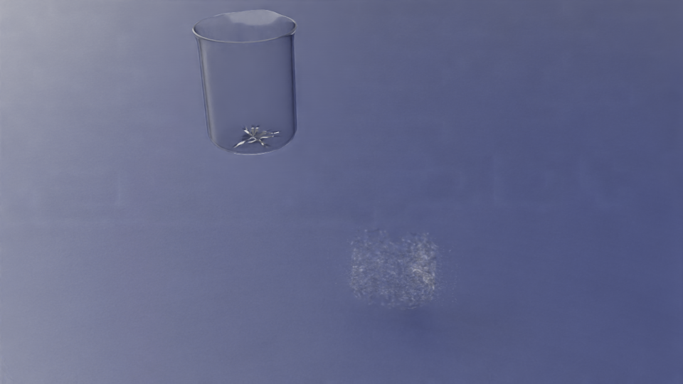
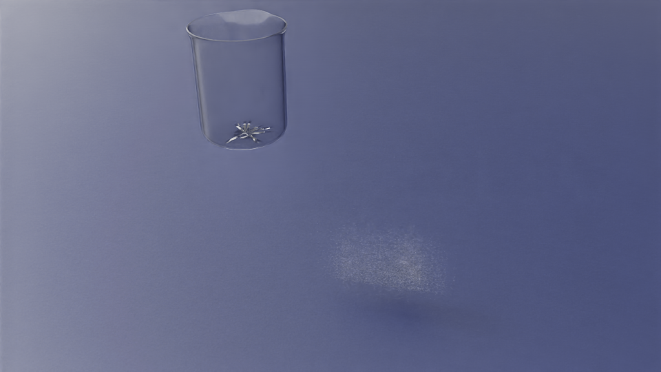
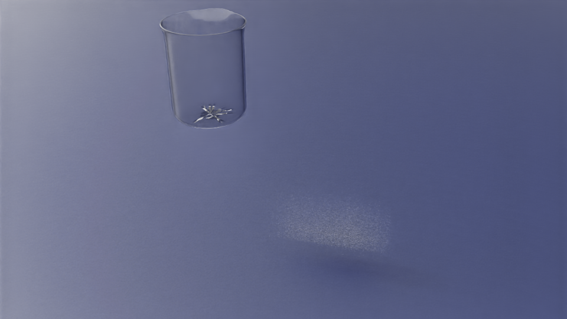

已证明
杯子静置能装住水（粒子读回权威）；过关轨迹上 ClearWater 材质编译通过。
同事真实 USD 场景里，看不见的 fluid-safe wrapper（D4A_018）让静置持液在 512/1024/4096/50k × 3 seed 上 12/12 过关（Physics A / G1）。同场景 ClearWater MDL 展示也过关（Visual A / G2）。倒水（S3）未放行；不能说口语「真实水」。
杯子静置能装住水（粒子读回权威）；过关轨迹上 ClearWater 材质编译通过。
慢倒水 B：倾斜过程/倒完是否仍不漏。飞溅泡沫等特效仅占位。
「真实水完成」「倒水也像真的」「视频好看=物理过关」「可 EBench score」。
入口是同事完整 lab_001_level1_pour_tabletop_with_liquid.usd；物理用 G1 dual-ring wrapper；渲染为 PhysX Isosurface + OmniSurface_ClearWater。漏液判定仍看 particle readback，不看画面。
PASS_SOURCE_HOLD（outside/spill/below=0）。这是周报唯一主视频；旧漏液/诊断片已删。
时长取自已验证不漏窗口（120 step 密帧），不是硬拉长到漏水再播。
G1 的 50k 过关在受控晋级矩阵；同事 USD 全量 50k 长持液 overlay 仍会漏，故主视频不用那条。



看得见的烧杯 ≠ 粒子撞到的墙。原生 mesh / SDF / 单圈拼板都会漏。做法：原生杯子只负责好看；物理挂看不见的 FluidSafeWrapper。
放弃：连续开杯 mesh、平面 box 杯。正式方案只有 D4A_018 dual-ring。
| 阶段 | 状态 | 说明 |
|---|---|---|
| G1 Physics A | GO · 12/12 | fluid_spike_d4_wrapper_promotion_v4_20260709.json |
| G2 Visual A | GO · ClearWater PASS | fluid_spike_visual_a_official_20260709.json |
| Task 11 慢倒 B | 未开 | s3_kinematic_pour_released=false；先定口径再工程 |
assets/g1g2-hold-long.mp4fluid_spike_g1g2_hold_long_20260709.jsonmain_video=assets/g1g2-hold-long.mp4 hold_long=../../docs/labutopia_lab_poc/evidence_manifests/fluid_spike_g1g2_hold_long_20260709.json g1=../../docs/labutopia_lab_poc/evidence_manifests/fluid_spike_d4_wrapper_promotion_v4_20260709.json g2=../../docs/labutopia_lab_poc/evidence_manifests/fluid_spike_visual_a_official_20260709.json g2_rubric=../../docs/labutopia_lab_poc/evidence_manifests/fluid_spike_visual_a_official_rubric_20260709.json source_usd=../../outputs/usd_asset_packages/lab_001_localized_20260707/lab_001_level1_pour_tabletop_with_liquid.usd
周报已精简：只保留过关结论、一条真实 USD 持液主视频（~15s，readback PASS）、collider 要点与下一步。旧漏液/诊断视频已删除。同事 USD 全量 50k 长持液 overlay 仍会漏，故未挂那条。